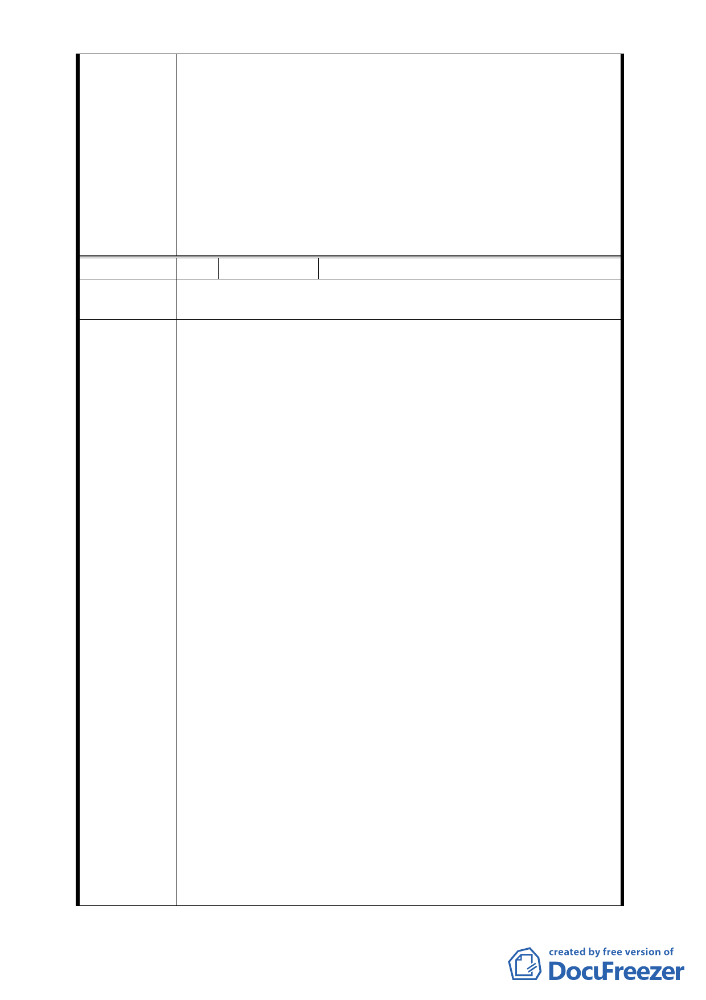

委員會決議
669、669-1、及670地號等5筆土地）變更第三種住宅
區、市場用地及停車場用地為第三種住宅區（特）先
予通過，建蔽率維持45％，容積率最高450％，其餘土
地使用項目、建築高度比、前後院深度比、側院寬度、
鄰幢間隔等悉依「臺北市土地使用分區管制自治條例」
第三種住宅區規定，案名併同修正。
二、 其餘地區為使計畫更臻完善以及減少後續執行疑義，
請都市發展局補充公共設施之承載量及交通衝擊分
析、全區都市設計準則、整體開發計畫，並考量周圍
街區共同開發的可行性後，再提會審議。
編 號 4 陳情人 明義里高德四里長(100 年 12 月 28 日)
建議位置
文山區華興段一小段 260 地號等 32 筆土地及文山區華興段一
小段 252 地號等 26 筆土地
一、 感謝都更處及都市更新學會說明都市更新作業推動流
程及內容，且本地區已與居民進行都更整合多時。但
依 100.09.27 府都規字第 10035448700 號公告公開展覽
「變更臺北市文山區華興段一小段 253 地號等第一種
商業區（特）、第三種住宅區、市場用地及停車場用地
為第一種商業區（特）及第三種住宅區（特）細部計
畫案」之計畫書內容，劃定範圍僅納市有土地，並未
考量緊鄰同一街廓之私有土地之整體環境改善問題，
為創造安全舒適的居住環境，建議緊鄰劃定範圍之同
一街廓土地（編號 B、C、H、F）等，應納計畫整體規
劃。
二、 本次陳情緊鄰編號 B、C 之同一街廓內土地（文山區華
興段一小段 260 等 32 筆土地及文山區華興段一小段
252 等 26 筆土地），現況大抵為四、五樓之低樓層建築
陳情理由
物，部分建物經擴建道路就地整建後，亟需進行更新
重建。近來已由熱心居民發起都市更新整合作業中，
於閱覽本次都市計畫變更內容，期使本區環境改造能
繼續推行，並與完工後公營住宅合為一整體環境，特
提出以下陳情意見：
（一） 為求開發建築基地之完整性，建議陳情土地納 B、C
基地整體考量：陳情土地扣除安康社區土地（為 303
、253 地號）後呈 L 型基地，受限基地深度，難完善
規劃。陳情公有地可參與同街廓之都市更新單元，
俾利推行都更工作。
（二） 為求土地開發之公平性，建議容積率同編號 B、C 基
地變更為 450％：陳情土地使用分區同為住三及商一
特（原住三），現況大抵為四、五樓之低樓層建築物
，亟需進行更新，俾與未來公營住宅社區，形成完
整的居住環境。同一街廓同採都市計畫專案變更方
- 21 -